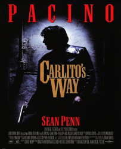

Naslov izvornika: The Godfather
Redatelj: Francis Ford Coppola
Producent: Albert S. Ruddy
Roman: Mario Puzo
Scenarij: Mario Puzo, Francis Ford Coppola, Robert Towne
Glavne uloge: Marlon Brando, Al Pacino, James Caan, Robert Duvall, Diane Keaton
Distributer: Paramount Pictures
Godina izdanja: 1972.
Naslov izvornika: The Godfather Part II
Redatelj: Francis Ford Coppola
Producent: Francis Ford Coppola
Roman: Mario Puzo
Scenarij: Mario Puzo, Francis Ford Coppola, Robert Towne
Glavne uloge: Marlon Brando, Al Pacino, Robert De Niro, Robert Duvall, Diane Keaton
Distributer: Paramount Pictures
Godina izdanja: 1974.
Naslov izvornika: The Godfather Part III
Redatelj: Francis Ford Coppola
Producent: Francis Ford Coppola
Roman: Mario Puzo
Scenarij: Mario Puzo, Francis Ford Coppola
Glavne uloge: Al Pacino, Diane Keaton, Andy Garcia, Talia Shire, Sofia Coppola
Distributer: Paramount Pictures
Godina izdanja: 1990.
Naslov izvornika: Goodfellas
Redatelj: Martin Scorsese
Producent: Irwin Winkler
Scenarij: Nicholas Pileggi, Martin Scorsese
Glavne uloge: Ray Liotta, Robert De Niro, Joe Pesci
Distributer: Warner Bros.
Godina izdanja: 1990.
Naslov izvornika: Casino
Redatelj: Martin Scorsese
Producent: Barbara De Fina
Scenarij: Nicholas Pileggi, Martin Scorsese
Glavne uloge: Robert De Niro, Joe Pesci, Sharon Stone, Frank Vincent
Distributer: Universal Pictures
Godina izdanja: 1995.
Naslov izvornika: Donnie Brasco
Redatelj: Mike Newell
Producent: Alan Greenspan
Scenarij: Paul Attanasio
Glavne uloge: Johnny Depp, Al Pacino, Michael Madsen, Diane Keaton
Distributer: Sony
Godina izdanja: 1997.
Naslov izvornika: The Departed
Redatelj: Martin Scorsese
Producent: Brad Grey
Scenarij: William Monahan
Glavne uloge: Leonardo DiCaprio, Matt Damon, Jack Nicholson
Distributer: Warner Bros.
Godina izdanja: 2006.
Naslov izvornika: Reservoir Dogs
Redatelj: Quentin Tarantino
Producent: Lawrence Bender
Scenarij: Quentin Tarantino
Glavne uloge: Harvey Keitel, Tim Roth, Steve Buscemi
Distributer: Miramax Films
Godina izdanja: 1992.